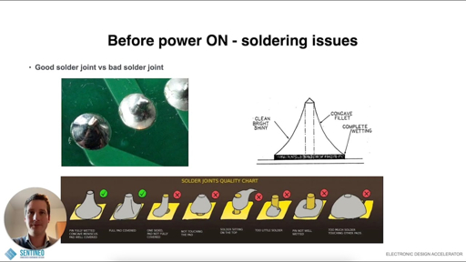

Soldering is the process of joining two metals using a filler material (Solder) to create a mechanical and electrical bond.
Heats the joint. Standard electronics work happens between 300°C and 350°C.
Usually a Lead-Free (Sn/Cu) or Leaded (Sn/Pb) wire with a Rosin Core (Flux).
Cleaning Tools:
The "3-Second" Rule:
A good joint is Shiny and Concave (like a Hershey's Kiss).

Left: Ideal Joint | Right: Cold Joint (Bad)
Tools for the "Undo" Button:
Tomorrow: Systematic Troubleshooting—How to find the needle in the haystack.